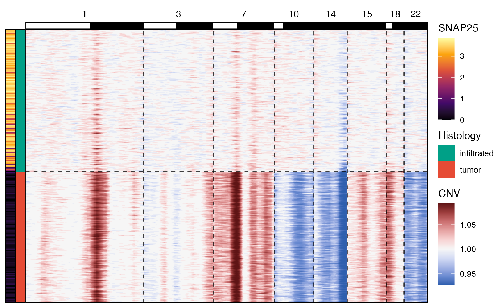
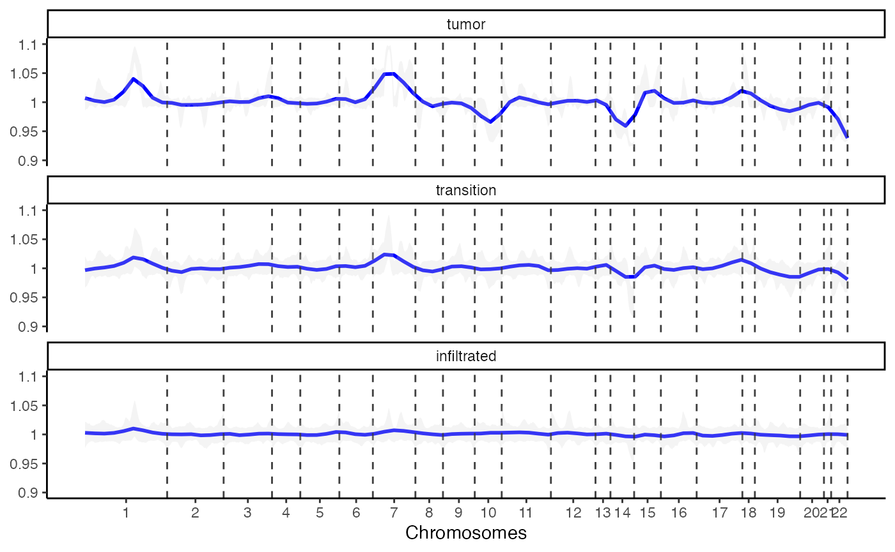
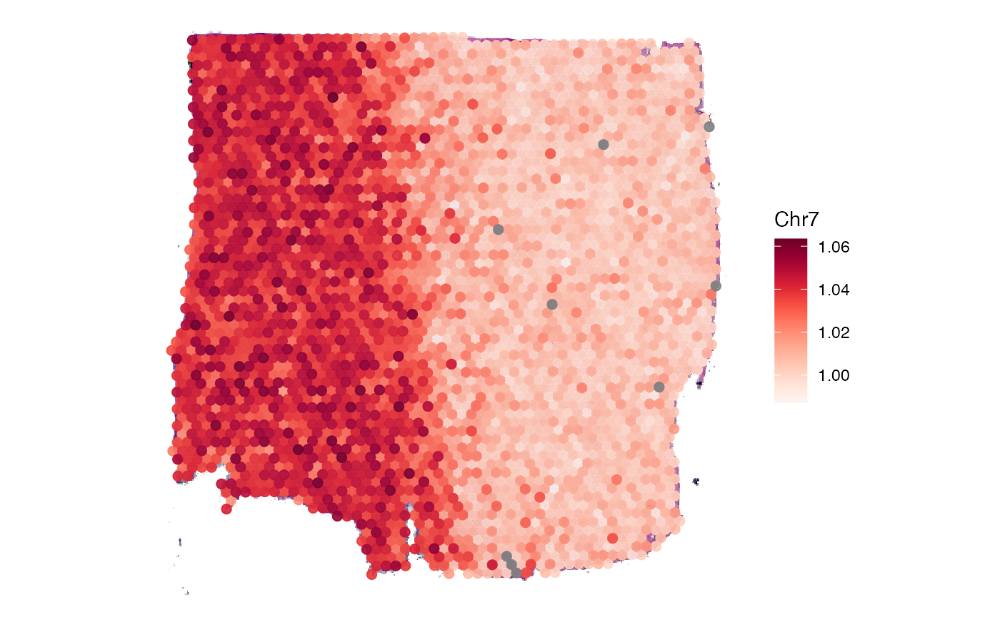
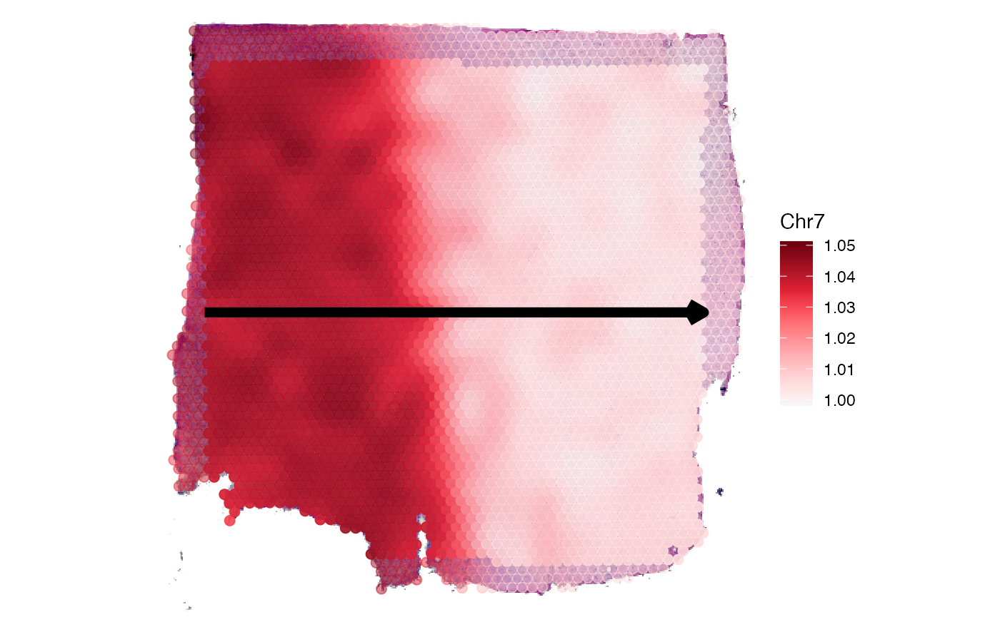
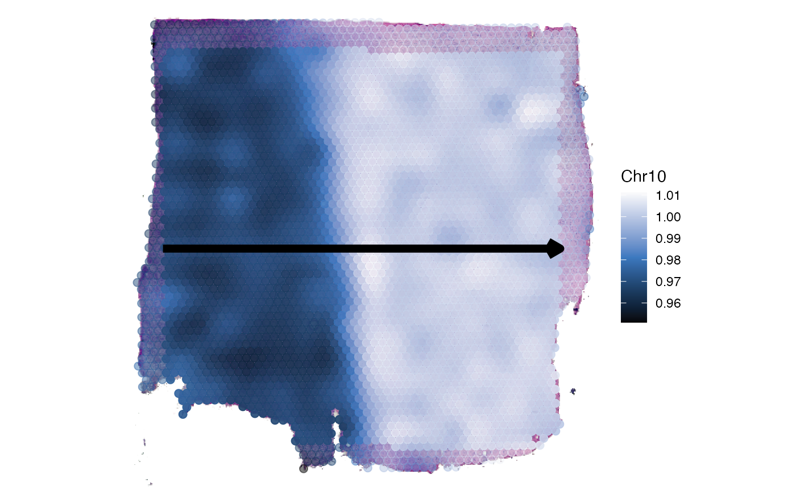
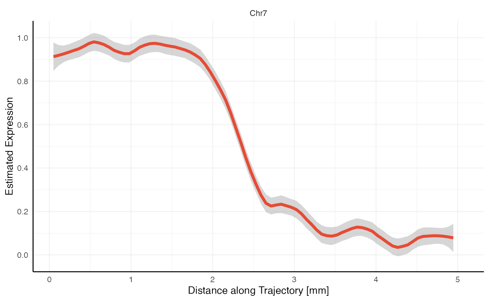

Copy Number Variations (CNV)
cnv.Rmd1. Introduction
InferCNV is used to identify large-scale chromosomal copy number alterations in single cell RNA-Seq data including gains or deletions of chromosomes or large segments of such. Several publications have leveraged this technique. (Patel et al., 2014, Tirosh et al., 2016, Venteicher et al., 2017 )
Note: We are currently encountering problems with the function
infercnv:::plot_cnv(). It does not prevent the copy number
variation analysis. Sometimes, however, the heatmap is not plotted.
Checkout your R console for hints in how far the function did not work
properly. We are working on a solution for that. If you encounter
warnings raised from runCNV()` let us know.
# load required packages
library(SPATA2)
library(SPATAData)
library(tidyverse)
# load SPATA2 object
object_t313 <- downloadSpataObject(sample_name = "UKF269T")
# alternatively, use diet version (results might differ slightly)
object_t313 <- loadExampleObject(sample_name = "UKF269T")
# only histology
plotSurface(object, = object_t269, pt_alpha = 0)
# histological grouping
plotSurface(object = object_t269, color_by = "histology")

SPATA2 implements the package infercnv
published and maintained by Broadinstitute and allows to integrate this
technique in your workflow of analyzing spatial trancsriptomic data
derived from malignancies.
2. Running CNV Analysis
As with all other functions prefixed with run*() the
function runCNV() is a wrapper around all necessary
functions needed to conduct copy-number-variation-analysis. The results
needed for subsequent analysis steps are stored in the specified
SPATA2 object (slot: @cnv).
The infercnv-object is stored in the folder specified in the argument
directory_cnv_folder.
object_t269 <-
runCNV(
object = object_t269,
# the directory must exist in your file system
directory_cnv_folder = "data-gbm269/cnv-results",
cnv_prefix = "Chr"
)If your desired set up deviates from the default you can reach any
function of the inferncnv pipeline by entering it’s name as
an argument and specify it’s input as a list of arguments with which you
want it to be called.
# change input
object_t269 <-
runCNV(
object = object_t269
directory_cnv_folder = "data-gbm269/cnv-results",
clear_noise_via_ref_mean_sd = list(sd_amplifier = 2)
)Copy number variation analysis requires reference data. This includes
a count matrix from healthy tissue, an annotation file as well as a
data.frame that contains information about the chromosome positions. We
provide reference data in the list SPATA2::cnv_ref.
names(cnv_ref)## [1] "annotation" "mtr" "regions"
summary(cnv_ref)## Length Class Mode
## annotation 1 data.frame list
## mtr 71067022 dgCMatrix S4
## regions 4 data.frame listrunCNV() defaults to the content of this list. The
documentation of runCNV() contains a detailed description
of the requirements each reference input must meet in order for the
function to work.
3. CNV Results
The results are stored in a list inside the SPATA2
object. This list can be obtained via getCnvResults().
cnv_results <- getCnvResults(object_t269)
names(cnv_results)## [1] "prefix" "cnv_df" "cnv_mtr" "gene_pos_df" "regions_df"4. Visualization
Note, that the plots below might differ slightly from what you obtain after copy and pasting this code since you are working with a reduced version of the original UKF269T sample. To run this tutorial with the complete data set download sample UKF269T with the SPATAData package.
# if you want the complete object
library(SPATAData)
object <- downloadSpataObject("UKF269T")
object <- runCNV(object)4.1 Heatmap
The gains and losses of chromosomal segments can be displayed via
plotCnvHeatmap(). Without any meta data CNV heatmaps are
not that insightful. If you want to visualize the results across certain
groups to highlight differences across groups make use of the
across and across_subset arguments.
plotCnvHeatmap(object = object_t269, across = "histology", clrp = "npg")
You can add additional meta variables to the legend, numeric and
categorical ones alike. Furthermore, you can subset the chromosomes to
be displayed as well as the groups across which the results are shown.
CNV heatmaps in SPATA2 actually consist of multiple ggplots assembled
via the aplot package. You can adjust them by referring to
them by name within the ggpLayer argument. For a detailed
documentation of how to create the CNV heatmap you desire please refer
to the extensive documentation via plotCnvHeatmap().
# a more complex set up
plotCnvHeatmap(
object = object_t269,
across = "histology",
across_subset = c("infiltrated", "tumor"), # dont show the transition part
meta_vars = "SNAP25", # visualize SNAP25 expression on the left
meta_vars_clrs = c("SNAP25" = "inferno"), # with the inferno color spectrum
chrom_subset = c("1", "3", "7", "10", "14", "15", "18", "22"), # only show these chromosomes
ggpLayers = list(arm = list(legendNone())) # remove the chrom arm legend
)
# right plot
plotSurface(object_t269, color_by = "SNAP25", pt_clrsp = "inferno")
4.2 Lineplot
An additional option to visualize the results provides
plotCnvLineplot().
plotCnvLineplot(
object = object_t269,
across = "histology",
n_bins_bcsp = 1000,
n_bins_genes = 1000,
nrow = 3
)
4.3 Surface
The numeric values by which the copy number variations of each
chromosome are represented are immediately transferred to the
SPATA2 object’s feature data and are thus accessible for
all functions that work with numeric variables. The character string
specified in argument cnv_prefix combined with the
chromosomes number determines the name by which you can refer to these
feature variables.
# cnv feature names
getCnvFeatureNames(object = object_t269) %>% head()## [1] "Chr1" "Chr2" "Chr3" "Chr4" "Chr5" "Chr6"
# are part of all feature names
getFeatureNames(object = object_t269) %>% head()## factor integer numeric numeric
## "orig.ident" "nFeature_RNA" "percent.mt" "percent.RB"
## factor factor
## "RNA_snn_res.0.8" "bayes_space"Use plotSurface() to visualize chromosomal alterations
directly on the histology.
plotSurface(
object = object_t269,
color_by = "Chr7",
pt_clrsp = "Reds"
)
plotSurface(
object = object_t269,
color_by = "Chr10",
pt_clrsp = "Oslo"
)
4.4 Gradients
As showcased in our corresponding vignette about spatial trajectories gradients of numeric variables can be displayed. Chromosomal alterations are numeric variables.
plotSpatialTrajectories(
object = object_t269,
ids = "horizontal_mid",
color_by = "Chr7",
pt_clrsp = "Reds 3"
)
plotSpatialTrajectories(
object = object_t269,
ids = "horizontal_mid",
color_by = "Chr10",
pt_clrsp = "Oslo"
)
plotStsLineplot(
object = object_t269,
id = "horizontal_mid",
variables = "Chr7"
)
plotStsLineplot(
object = object_t269,
id = "horizontal_mid",
variables = "Chr10",
line_color = "blue"
) (Note that trajectory lineplots always rescale variables to 0-1 or to
low-high.)
(Note that trajectory lineplots always rescale variables to 0-1 or to
low-high.)